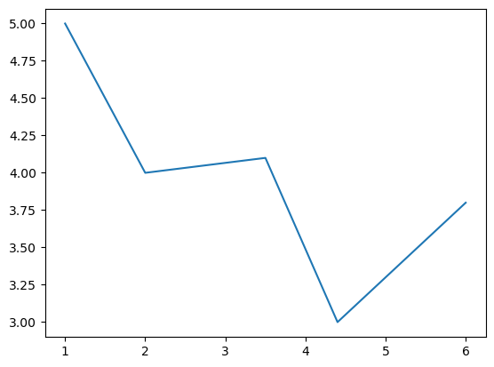
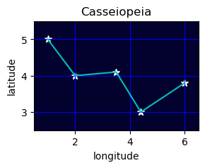

Introduction to Python, Part 3
Follow along in Binder by clicking the badge below:

0. Packages
This lesson is the third in a series of workshops that provide an introduction to programming using Python.
This lesson builds on the foundation of lessons 1 and 2 and covers:
- packages (also known as libraries)
- interfacing with files using os
- running from the command line with subprocess
- mathematical operations with math
- file I/O (input/output) using open()
- plotting using matplotlib
- DataFrame operations using pandas
1. Built-in Packages
Using the basics of Python we've learned so far, it's possible to perform many operations you might want to deal with in Python. In theory, you could probably write a script or function to do just about anything you wanted using just base Python language.
However, that would probably not be an efficient use of your time!
It turns out that there are many built-in packages that Python provides to do more complex things, built upon the Python language.
1.1 File handling with os
Importing a package in Python uses the following syntax. Below, we import the os package.
import os
Let's explore some of the functions of the os package.
The function os.getcwd() returns the current working directory your script or Jupyter notebook is located in.
You might notice that we access this function using a dot . operator, much like we use when accessing the method of a data type, such as list.append().
os.getcwd()
'/home/ec2-user/arcadia-computational-training/docs/arcadia-users-group/20230328-intro-to-python-3'
Another helpful function is os.listdir(), which returns a list of all files in the current directory.
os.listdir()
['.ipynb_checkpoints',
'newfile.txt',
'newfile2.txt',
'practice2.txt',
'test.csv',
'lesson_files',
'testfiles',
'cities.csv',
'hello.txt',
'lesson.ipynb',
'lesson.md',
'playground.ipynb']
You can find more information about the functions in os using Python's web documentation.
Most of the functions in os are not things we'd need to use for biological data analysis.
The most useful part of os for us is actually one of its modules.
A module is a sub-collection of functions within a package.
You can access modules in the same way you access the methods of a data type, using a dot . operator.
A particularly useful module of os is os.path. You can find its web documentation here.
For example, you can use the os.path.exists() function to see if a file exists at a specific location.
os.path.exists('hello.txt')
True
You can also use os.path to get the path to a specific file in both absolute and relative formats.
# Prints the relative path to the file
print(os.path.relpath('hello.txt'))
# Prints the absolute path to the file
print(os.path.abspath('hello.txt'))
hello.txt
/home/ec2-user/arcadia-computational-training/docs/arcadia-users-group/20230328-intro-to-python-3/hello.txt
These functions can be particularly helpful when using Python to create or modify files used for bioinformatic analysis.
1.2 Interfacing with the command line using subprocess
Many bioinformatic software packages are executed through the command line.
For example, tblastn can be run using your terminal if you have it installed.
Jupyter notebooks have certain "magic" functions of cells that can allow you to run specific command line functions directly through your notebook.
For example, basic commands such as ls or pwd can be run when typed directly into a cell.
ls
cities.csv lesson.ipynb newfile.txt test.csv
hello.txt lesson.md playground.ipynb [0m[01;34mtestfiles[0m/
[01;34mlesson_files[0m/ newfile2.txt practice2.txt
pwd
'/home/ec2-user/arcadia-computational-training/docs/arcadia-users-group/20230328-intro-to-python-3'
However, not all command line functions can be accessed in this way.
For example, you can't use the which utility using Jupyter magic - you'll get an error instead.
which python
Cell In[8], line 1
which python
^
SyntaxError: invalid syntax
For commands that aren't compatible with this approach, you can use a different type of Jupyter magic syntax using the exclamation point operand !.
!which python
/home/ec2-user/miniconda3/envs/umap/bin/python
This can be really nice when you plan on programming interactively.
However, using the exclamation point Jupyter magic doesn't translate well if you were to convert your Jupyter notebook into a Python script.
If you were to try to use the exclamation point operator in a script, you'd have to rewrite some of your code, which is never fun!
Instead of relying Jupyter magic, we suggest using the package subprocess, which passes commands from Python into the shell.
import subprocess
subprocess.run(['which', 'python'])
/home/ec2-user/miniconda3/envs/umap/bin/python
CompletedProcess(args=['which', 'python'], returncode=0)
The code above runs the same as !which python.
subprocess.run passes each element of a list as an argument to the shell.
It's unfortunately not as tidy looking, but it does allow for more robust code that can be converted to Python scripts without rewriting!
1.3 math ematics
The built-in math package can perform some useful mathematical operations.
import math
# Take the natural logarithm of a number
print(math.log(2))
# Take the square root of a number
print(math.sqrt(4))
# Get the factorial of a number
print(math.factorial(3))
0.6931471805599453
2.0
6
In addition to its many functions, math also includes hard-coded values such as:
print(math.pi)
print(math.e)
3.141592653589793
2.718281828459045
Packages can thus be used to distribute specific values in addition to helpful functions!
P1. Practice
Let's try using some Python packages to do useful things.
Practice 1
Using a
forloop, create a directory calledtestfiles/in the current directory and populate it with empty files numberedfile1.txttofile5.txtHint: The command-line tool
touchcreates an empty file. Its syntax istouch filename.
Hint: You also might want to check out this list ofosfunctions.
Practice 1 Sample Answer
import subprocess
import os
numbers = [1, 2, 3, 4, 5]
destination = 'testfiles/'
os.mkdir(destination)
for number in numbers:
filename = 'file' + str(number) + '.txt'
subprocess.run(['touch', destination + filename])
*Example using os.path.join()*
import subprocess
import os
numbers = [1, 2, 3, 4, 5]
destination = 'testfiles/'
os.mkdir(destination)
for number in numbers:
filename = 'file' + str(number) + '.txt'
subprocess.run(['touch', os.path.join(destination, filename)])
###############################################
##### Write your code in the space below. #####
#### Then run the cell to check your work. ####
###############################################
# Prints 'True' if all files exist, else False.
# This checker uses a special syntax called a List Comprehension.
# You don't need to understand this yet, but if you're curious, feel free to ask!
filenames = ['testfiles/file' + str(num) + '.txt' for num in [1, 2, 3, 4, 5]]
print(all([os.path.exists(file) for file in filenames]))
True
2. Opening files with open()
You've created some empty files in the exercise above, but what if you actually wanted to open files?
Python has a built-in function, open(), which allows for direct file handling.
file = open('hello.txt')
The open() function doesn't print anything - it actually is a data type called _io.TextIOWrapper.
type(file)
_io.TextIOWrapper
This particular data type has certain methods, such as .read(), which reads each element of the file character by character.
file.read()
'Hello\nworld\nmy\nname\nis\nGuido'
You can see that calling .read() returns a str which is every character in the file in order.
This would probably not be a practical way of dealing with a very large file, and is certainly quite a clunky interface.
You can improve this slightly by using the .readlines() method. This splits the file into a list, using a linebreak.
file = open('hello.txt')
file.readlines()
['Hello\n', 'world\n', 'my\n', 'name\n', 'is\n', 'Guido']
Another somewhat annoying aspect of this approach is that you also always have to .close() a file when you're done with it, or you can run into all sorts of weird errors.
For example, if we try to read the file again without closing it, we get an empty list.
This is because we already read through all of the lines in the file, and Python has kept track of that and picked back up reading at the end of the file.
file.readlines()
[]
To read the file in a different way, we have to .close() it and then open() it again.
file.close()
file = open('hello.txt')
print(file.readlines())
file.close()
['Hello\n', 'world\n', 'my\n', 'name\n', 'is\n', 'Guido']
2.1 Opening files more easily using with
Because of these quirks of Python's file handling using open(), the preferred way of loading files is using a with statement.
This statement works similarly to try - except - finally but is mostly used for file streaming.
with open('hello.txt') as file:
output = file.readlines()
print(output)
['Hello\n', 'world\n', 'my\n', 'name\n', 'is\n', 'Guido']
The with statement is a special kind of statement that does some stuff in the background to automatically .close() your file when the code block completes.
If you're curious, this tutorial gives some more explanation, but we won't go into the details here.
2.2 Writing to files
We've seen how you can pull information out of an existing file and pass it as a string or list.
But what if you have data that you've generated or loaded in Python and want to actually save that information to a file?
You can also use with open() for this as well.
my_text = "Let's see if this works..."
with open('newfile.txt', 'w') as file:
file.write(my_text)
The difference between read()ing a file and write()ing a file comes from the 'w' argument we passed to the open() function.
The open() function actually accepts two arguments:
- file: the path to the file you're opening
- mode: how you're opening the file.
This is 'r' or read by default - if you want to be able to write to file, you use 'w'.
To be able to both read and write, you use 'w+'.
Let's check whether our file contains the expected text.
less newfile.txt
Let's see if this works...
Using the Jupyter magic command less, we can preview the file we just created. This seems to have worked!
What about if we wanted to write not just a single string, but a list of strings, separated each by a line break?
my_text_list = ['Lorem', 'ipsum', 'dolor', 'sit', 'amet']
with open('newfile2.txt', 'w') as file:
file.write(my_text_list)
---------------------------------------------------------------------------
TypeError Traceback (most recent call last)
Cell In[25], line 4
1 my_text_list = ['Lorem', 'ipsum', 'dolor', 'sit', 'amet']
3 with open('newfile2.txt', 'w') as file:
----> 4 file.write(my_text_list)
TypeError: write() argument must be str, not list
You'll see that the code above returns a TypeError: write() argument must be str, not list.
We can't pass the variable my_text_list to write() because it's not a list!
Rather than explaining exactly how to solve this problem, why don't we practice figuring out how to solve the problem?
P2. Practice
Let's practice figuring out how to do something in Python!
Practice 2
You want to be able to write a list to a file, with each element of the list on a different line in the file.
Figure out how to write the listpractice_listto a file calledpractice2.txt.You can already solve this problem with what we've learned, but there are many possible ways to deal with this issue.
Try to figure out on your own how you might overcome this problem.Tip: Search engines such as Google are your friend in this situation! Try looking for help on websites like StackOverflow, W3Schools, or Real Python.
A huge part of learning how to program is also learning how to search for the solutions to your own programming problems.Hint: Try simply searching for the error above (
TypeError: write() argument must be str, not list) and see where that gets you.
How might you modify this query to get closer to solving your problem?
Practice 2 Sample Answer A
Using
file.writelines():
new_list = []
for word in practice_list:
new_list.append(word + '\n')
with open('practice2.txt', 'w+') as file:
file.writelines(new_list)
Practice 2 Sample Answer B
Using a
for loop with file.write():
with open('practice2.txt', 'w+') as file:
for word in practice_list:
file.write(word)
file.write('\n')
practice_list = ['We', 'can', 'solve', 'Python', 'problems', 'ourselves']
###############################################
##### Write your code in the space below. #####
#### Then run the cell to check your work. ####
###############################################
with open('practice2.txt', 'r') as file:
print(file.read())
We
can
solve
Python
problems
ourselves
3. Installed Packages
One of the awesome things about Python is the large community of other programmers – software engineers, scientists, hobbyists - who are also building functions using Python. Many of these folks share their work through Python packages (also sometimes referred to as libraries).
Today we'll have a whirlwind tour about how to import and use some of the more commonly-used packages. We won't cover how to install these packages - many can be installed using mamba, which is our preferred way of managing software installation. Check out this AUG training session on conda and mamba for more.
We'll be blazing through these examples, so don't worry if you don't understand all of the code in each cell - this is mostly to show you how many different kinds of things you can do with Python packages.
3.1 Plotting with matplotlib
Presenting data in a visual format often helps us make decisions or communicate our results.
A popular Python package for making plots is matplotlib.
Below, we use the module matplotlib.pyplot to plot some data using x and y coordinates.
import matplotlib.pyplot as plt
x = [1, 2, 3.5, 4.4, 6]
y = [5, 4, 4.1, 3, 3.8]
plt.plot(x, y)
plt.show()

You'll notice that rather than simply using import matplotlib.pyplot, we added an as plt expression to the end of our import statement.
Python allows you to import packages using aliases.
This saves you from having to type out matplotlib.pyplot.plot() and shortens the expression to plt.plot().
Package documentation examples often give you a suggestion for how you might abbreviate packages for others to be able to understand.
The base matplotlib package, for example, is often abbreviated as mpl.
You'll see additional examples of this in the other examples we'll look at.
3.2 Modifying a matplotlib plot
So, we've plotted a basic line plot. But what do the axes mean? And why is it so large - can we make it smaller?
matplotlib is a popular package for plotting because you can customize essentially every single aspect of any plot you make.
See the comments below for an example of a more customized plot.
import matplotlib.pyplot as plt
x = [1, 2, 3.5, 4.4, 6]
y = [5, 4, 4.1, 3, 3.8]
# You can establish a figure and set the figure size prior to plotting.
plt.figure(figsize = (3, 2))
# You can change the background color of your plot
ax = plt.axes()
ax.set_facecolor("xkcd:midnight") # matplotlib recognizes a variety of color names
plt.plot(x, y, c = 'c', linestyle = '-') # You can change the color (c) to cyan using 'c'. You can also set a dashed ('-') linestyle.
# If you call another plotting function without creating a new figure, you can plot again on the same plot.
plt.scatter(x, y, c = 'w', marker = '*', s = 50) # For a scatter plot, you can choose color (c), marker style, and marker size (s).
# You can set the specific x and y limits of your plot
plt.xlim(0.5, 6.5)
plt.ylim(2.5, 5.5)
# You can have matplotlib show a grid, and choose its color
plt.grid(c = 'b')
# You can label the x and y axes of the plot
plt.xlabel('longitude')
plt.ylabel('latitude')
# You can add a title to the plot
plt.title('Casseiopeia')
plt.show()

This example only scratches the barest surface of what you can do with plt.
If people want to learn more, we can have future workshops that dive into deeper detail about how matplotlib works and what you can do with it.
3.3 Working with DataFrames using pandas
A popular package for dealing with tabular data like .tsv and .csv files is pandas.
You can use pandas to load files and perform all manner of database manipulations using DataFrame data structures.
import pandas as pd
df = pd.read_csv('cities.csv')
# The display() function allows us to nicely view tables and other data in Jupyter
display(df)
| LatD | LatM | LatS | NS | LonD | LonM | LonS | EW | City | State | |
|---|---|---|---|---|---|---|---|---|---|---|
| 0 | 41 | 5 | 59 | N | 80 | 39 | 0 | W | Youngstown | OH |
| 1 | 42 | 52 | 48 | N | 97 | 23 | 23 | W | Yankton | SD |
| 2 | 46 | 35 | 59 | N | 120 | 30 | 36 | W | Yakima | WA |
| 3 | 42 | 16 | 12 | N | 71 | 48 | 0 | W | Worcester | MA |
| 4 | 43 | 37 | 48 | N | 89 | 46 | 11 | W | WisconsinDells | WI |
| ... | ... | ... | ... | ... | ... | ... | ... | ... | ... | ... |
| 123 | 39 | 31 | 12 | N | 119 | 48 | 35 | W | Reno | NV |
| 124 | 50 | 25 | 11 | N | 104 | 39 | 0 | W | Regina | SA |
| 125 | 40 | 10 | 48 | N | 122 | 14 | 23 | W | RedBluff | CA |
| 126 | 40 | 19 | 48 | N | 75 | 55 | 48 | W | Reading | PA |
| 127 | 41 | 9 | 35 | N | 81 | 14 | 23 | W | Ravenna | OH |
128 rows × 10 columns
You can use pandas to do things like:
- filter your data to get specific subsets
- calculate summaries across specific axes
- perform complex manipulations using aggregation
# Select only rows where the column 'State' is equal to 'CA'
ca_cities = df[df['State'] == 'CA']
display(ca_cities)
# Summarize the number of cities per state
cities_per_state = df.value_counts('State')
display(cities_per_state[0:10]) # Display counts for the top 10 states
# Get a table that lists the name of each city in each state
cities_listed = df[['State', 'City']].groupby('State').agg(lambda x: [i for i in x])
display(cities_listed.head(10)) # Display the first 10 states
| LatD | LatM | LatS | NS | LonD | LonM | LonS | EW | City | State | |
|---|---|---|---|---|---|---|---|---|---|---|
| 18 | 41 | 25 | 11 | N | 122 | 23 | 23 | W | Weed | CA |
| 59 | 37 | 57 | 35 | N | 121 | 17 | 24 | W | Stockton | CA |
| 85 | 38 | 26 | 23 | N | 122 | 43 | 12 | W | SantaRosa | CA |
| 87 | 34 | 25 | 11 | N | 119 | 41 | 59 | W | SantaBarbara | CA |
| 88 | 33 | 45 | 35 | N | 117 | 52 | 12 | W | SantaAna | CA |
| 89 | 37 | 20 | 24 | N | 121 | 52 | 47 | W | SanJose | CA |
| 90 | 37 | 46 | 47 | N | 122 | 25 | 11 | W | SanFrancisco | CA |
| 92 | 32 | 42 | 35 | N | 117 | 9 | 0 | W | SanDiego | CA |
| 93 | 34 | 6 | 36 | N | 117 | 18 | 35 | W | SanBernardino | CA |
| 98 | 36 | 40 | 11 | N | 121 | 39 | 0 | W | Salinas | CA |
| 110 | 38 | 35 | 24 | N | 121 | 29 | 23 | W | Sacramento | CA |
| 125 | 40 | 10 | 48 | N | 122 | 14 | 23 | W | RedBluff | CA |
State
CA 12
TX 8
OH 6
WA 6
PA 6
NY 5
FL 5
WI 4
MO 4
GA 4
dtype: int64
| City | |
|---|---|
| State | |
| AL | [Tuscaloosa, Selma] |
| AZ | [Tucson] |
| BC | [Vancouver] |
| CA | [Weed, Stockton, SantaRosa, SantaBarbara, Sant... |
| CO | [Trinidad, Sterling, Salida] |
| CT | [Waterbury] |
| DC | [Washington] |
| DE | [Wilmington] |
| FL | [WestPalmBeach, Tampa, Tallahassee, Sarasota, ... |
| GA | [Waycross, Valdosta, Swainsboro, Savannah] |
As you might notice, pandas can do rather complex operations using relatively few commands.
If you tried to manually build some of these functions, it could be quite challenging!
Hopefully these examples give you a sense of what you can do using Python if you build your skills and become fluent in the language.
4. Next Steps
We've gone through a whirlwind tour of Python over the last few weeks, but there are many more things to learn!
If there's interest, we can cover additional topics in future Python workshops.